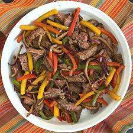

Steak Fajitas

Steak fajitas; beef, peppers, and onions, served with a stack of warm
tortillas and condiments.
Ingrediants (serves 6)
- 2 lbs skirt, flank, sirloin, or hanger steak
- 1 red pepper
- 1 bell pepper
1 onion
- 3 tbsp olive oil
- 1 tbsp lime juice
- 1/2 teaspoon chilli powder
- 1 teaspoon ground cumin
- pinch cayenne pepper
- 1/2 teaspoon salt
- 1/2 teaspoon ground black pepper
- 2 cloves garlic
- 6-8 tortillas
Steps
- Place the steak into a sealable bag. Place the peppers and onion into
a separate sealable bag. Add the olive oil, lime juice, chili powder,
ground cumin, cayenne pepper, salt, black pepper, and garlic to a jar
with a screw top or tight fitting lid. Shake until well combined.
Pour 1/3 of the marinade over steak, 1/3 of marinade over vegetables
and reserve the remaining marinade in the jar for using when
cooking the steak fajitas. Seal the bags tightly and refrigerate for
one hour to overnight.
- When ready to cook, heat a large skillet over medium-high heat. Pour
the vegetables into the skillet and cook until just tender crisp,
about 5 minutes. Remove the vegetables from the skillet to a plate
and add steak strips to the same skillet. When the steak is cooked
throughout (about 7-10 minutes), add vegetables back to the skillet
along with the reserved marinade.
- Serve with warm tortillas and desired optional garnishes.
- Enjoy!